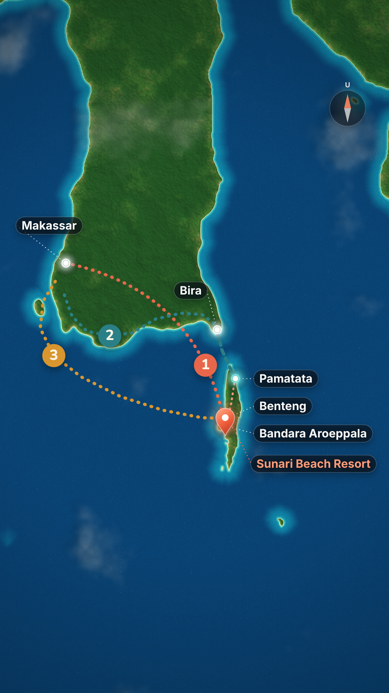
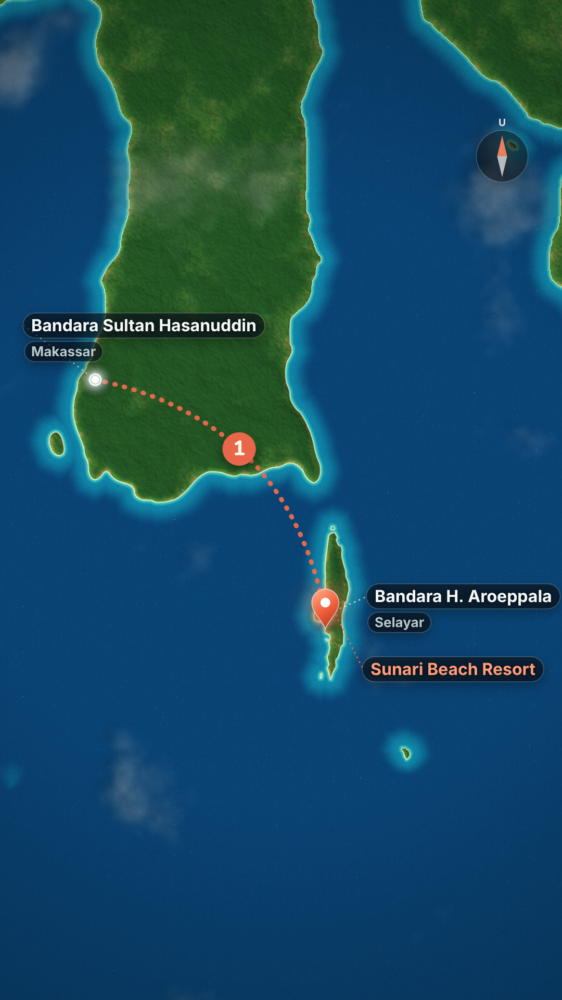
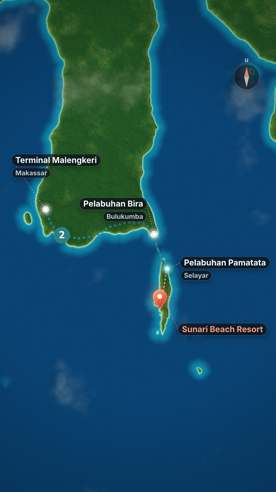
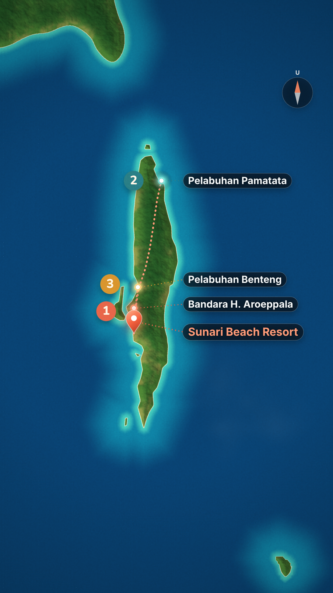
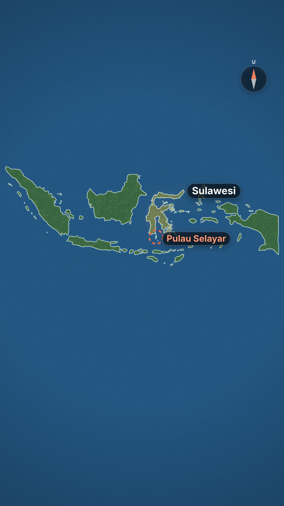

Travel Guide • Selayar
Cara Mudah Menuju SunaRi Beach Resort
Panduan lengkap rute udara, laut, dan layanan penjemputan.
@sunaribeachresortselayarGeser →
Travel Guide • Selayar
Panduan lengkap rute udara, laut, dan layanan penjemputan.

Peta rute

1Opsi 1 · Jalur udaraTercepat
Jadwal penerbangan menyesuaikan maskapai (disarankan cek H-7).

2Opsi 2 · Darat & feriScenic route
Tersedia jadwal penyeberangan pagi & siang.

3Opsi 3 · Kapal langsungTanpa transit
Berangkat malam, tiba pagi. Tidak setiap hari, jadi cek jadwal terbaru di PT DLU atau tanya admin kami.

Layanan resort
Penjemputan lokal
Paket transfer
Konfirmasi jadwal kedatangan minimal H-2 sebelum check-in.

Ringkasan
Desa Patikarya, Kec. Bontosikuyu, Kepulauan Selayar
Pantai Sunari · Jl. Poros Benteng – Appatana KM 14
WhatsApp 0821-8903-3044